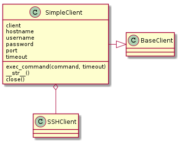

This is a wrapper around paramiko’s SSHClient that sets some flags to avoid host-key errors. The following are roughly equivalent.
SSHClient:
c = SSHClient()
c.set_missing_host_key_policy(paramiko.AutoAddPolicy())
c.load_system_host_keys()
c.connect(hostname='192.168.10.24', username='allion')
stdin, stdout, stderror = c.exec_command('ls')
SimpleClient:
c = SimpleClient(hostname='192.168.10.24', username='allion')
stdin, stdout, stderr = c.exec_command('ls')
This is some basic documentation for the SSHClient’s methods. Only some of them are re-implemented by the SimpleClient (because it’s simple), but the getattr is implemented so you can call the paramiko methods and they should work, but the errors will be different from the SimpleClient (they will be socket or paramiko errors) so you have to trap them.
Note
set_missing_host_key_policy and load_system_host_keys is called when the client is created, so you shouldn’t call it. The only extra methods you will likely ever use are invoke_shell and open_sftp. Otherwise you might as well use the SSHClient directly. The purpose of this module was to make it easier, not to re-do everything.
| SimpleClient | |
| SimpleClient.exec_command | |
| SimpleClient.client | |
| SimpleClient.__getattr__ | |
| SimpleClient.__str__ | |
| SimpleClient.close |

Warning
I’m using *args, **kwargs when connecting to the client so anything other than hostname, username and timeout will be passed in that way, but the string representation (__str__) expects the kwargs dictionary to have ‘port’ and ‘password’ arguments – to be safe use keyword arguments, not positional arguments when instantiating the SimpleClient.